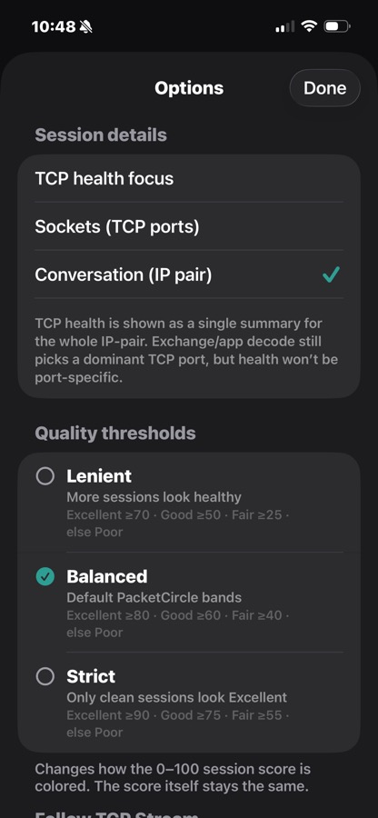

Disclaimer: the iOS release is currently under review by the Apple App Store and should be available soon.
Open/replay, Options, Session Details, and Follow TCP Stream.

Lenient / Balanced / Strict — changes how the 0–100 score is graded (not the score itself).
Caps reassembly so large streams don’t freeze the UI.
Client = red · Server = blue. Without SYN, direction uses a well-known-port heuristic.